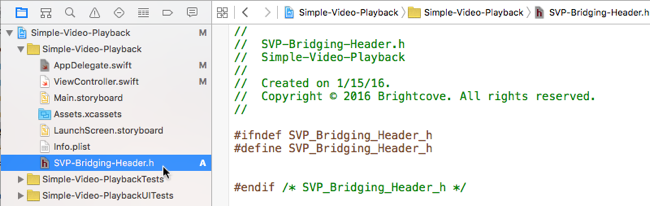

Swift: Simple Video Playback App
This tutorial will familiarize you with the basics of working with the Brightcove Player SDK for iOS by walking you through the development of a simple video playback app using Swift.
This example plays videos from a playlist returned from the Brightcove catalog service.
This example plays videos from an internal array of video files.
There are two ways to try out this sample:
Follow the steps below to get familiar with setting up an app project that uses the Brightcove SDK. You can view the complete code for each of the following:
- Follow the steps below to get familiar with setting up an app project that uses the Brightcove SDK. You can view the complete code for each of the following:
- Download the entire Xcode project for experimentation.
- Download the VideoCloudBasicPlayer sample to your local system.
- Run the
pod installcommand. - Open and run the newly created workspace.
This example is written in Swift, and is based on the VideoCloudBasicPlayer sample. If you prefer, you can view this same example written Objective-C.
Create the project
Set up a project in Xcode. Then add the SDK along with any dependencies to the project.
Set up the Xcode project
Create a new Xcode project for the app.
Start the creation of a new iOS project in Xcode. Select Create a new Xcode project.
Choose Single View Application for the template and select Next.
Set the project information as follows:
- Product Name: Simple Video Playback
- Organization Name: YourCompanyName
- Company Identifier: com.example-company
Choose the location where you want to save your project and create it.
- Now close the project (yes, close it — this is important!)


Add the SDK and its dependencies to your project
The easiest way to add the SDK and its dependencies to your project is to use CocoaPods. If you do not have CocoaPods installed, see the installation instructions on the CocoaPods site.
Using CocoaPods (the pod tool) on an existing Xcode project will modify the project file. You may want to make a backup before doing this.
In your project folder, create a plain text file called Podfile (no file extension).
Using a text editor, add the following lines of code to the Podfile and save it. This code does the following:
- Defines the iOS platform version.
- Installs the current version of the Brightcove player SDK.
Open a Terminal session and navigate to your Simple Video Playback Xcode project folder.
In the Terminal session, type the command
Notice the last line, which is important — from this point on, you must open the Simple Video Playback.xcworkspace file in Xcode, not the Simple Video Playback.xcodeproj file. The
pod installcommand creates this.xcworkspacefile for your project.
source 'https://github.com/CocoaPods/Specs.git'
platform :ios, '9.0'
pod 'Brightcove-Player-SDK'pod installand press Return to run the it. You should see a series of messages in the terminal indicating that the Brightcove Player SDK has been added to your project.
If you don't want to use CocoaPods , you can download the latest version of the SDK and manually add it to your project.
Add a bridging header
Since the Brightcove Player SDK for iOS is currently written in Obj-C, we can use a bridging header file to add Obj-C libraries to our Swift project.
- In Xcode, open the Simple Video Playback.xcworkspace file.
- In the left project navigation, select the Simple Video Playback folder.

- In the top navigation, select File > New > File
- In the dialogue, select Header File and then the Next button.

- Name the file SVP-Bridging-Header.h and select the Create button.

- You should see the new file in your project.

- In the left navigation, select your project, open the Build Settings and navigate to Swift Compiler - Code Generation.
- Locate the Objective-C Bridging Header property, and add a value for the path to your briding header file.

- In the SVP-Bridging-Header.h file, import the BCOVPlayerSDK.h file.
- Now, you are ready to code the app.
Code the video app
Create the code for a simple video playback app.
Define the audio session category
To ensure that the audio plays back when we expect it to, set the audio session category when the app finishes launching. To keep it simple, put the code for this in the App Delegate.
In your project, open the App Delegate file (AppDelegate.swift).
In the
didFinishLaunchingWithOptionsfunction, add code to set the audio session category. Make sure you import theAVFoundationframework.
Build the View Controller implementation
Update the View Controller class to play a video from the Brightcove catalog service.
Set the playback controller delegate
Update the line
class ViewController: UIViewControlleras follows:
Customize the project with your values
Add token and playlist id values to access your Video Cloud account.
Below the
importdirectives, add your own values for the following:- Your Brightcove API Read token with URL Access
- Your Brightcove Video Cloud playlist id
Declare constants and set the view
In the
ViewControllerclass, add the following :- Line 80: defines a constant, which initializes the
BCOVCatalogServicewith your catalog token. - Line 81: defines a constant for the
BCOVPlaybackController. Line 82: sets the view.
- Line 80: defines a constant, which initializes the
Create an init function
- Create an
initfunction as follows:- Line 85: initializes a shared manager.
- Line 86: instantiates the manager based on the default controls view strategy.
Lines 90-92: set the delegate and turn on the autoadvance and autoplay features.
Configure the player
In the
viewDidLoadmethod add the following:- Lines 98-99: configure the
playbackController's view. - Line 100: adds the player view as a subview of the main view.
- Line 102: calls the
requestContentFromCatalogfunction, which you will define in the next step.
- Lines 98-99: configure the
Request content from the Brightcove catalog
In order to play back video content, you will request a playlist from the catalog service
Create a function named
requestContentFromCatalogas follows:- Line 106: returns a playlist from the catalog service based on the given playlist id.
- Line 110: adds the playlist videos to the playback controller.
The rest
Create a function to handle when the playback session advances.
Create a function to set the status bar style.
View the code
The View Controller is now complete. Here is the full code:
Customize the project with your values
Set the value of your Perform Account Id, which will be sent to Brightcove in a later step.
Below the
#importdirectives, add your own value for your Brightcove Perform Account Id.
Declare properties
Add the following class declarations in the ViewController interface:
Define intialization methods
Define an
initfunction which calls asetupfunction which you will define in the next step.
Set up the player
- Create a method named
setup, which is called when the app loads. - Line 36: Gets a reference to the
BCOVPlayerSDKManagerobject. - Line 38: Instantiates the manager based on the default controls view strategy.
- Line 40: Sends your Perform Account Id to Brightcove.
- Lines 42-44: set the delegate and turn on the autoadvance and autoplay features.
Configure the player and start playback
In the
viewDidLoadmethod do the following:- Lines 51-54: Create an array of video sources. You'll define the
videoWithURLfunction in the next step. - Lines 56-57: Configure the
playbackController's view. - Line 58: Adds the player view as a subview of the main view.
- Line 61: Adds the video array to the controller's playback queue.
- Line 63: Starts playback of the first video.
The rest
Create a function that sets the delivery method for BCOVSources that belong to a video.
View the code
The View Controller implementation is now complete. Here is the full code:
Connect the storyboard view
Connect the Main.storyboard view with thevideoContainer property.
In the Assistant Editor, open the
Main.storyboard.In the companion view, expand the View Controller Scene and then the View Controller menu to expose the View object.
Open the
ViewController.mfile in the Assistant Editor.Select the open circle next to the
@propertyforvideoContainer, and drag it to the View object to connect these components.


Using Xcode 7
With Apple's release of the iOS 9 SDK and Xcode 7, a new feature called App Transport Security (ATS) enforces secure connections between an app and web services.
This is only an issue if you are building with Xcode 7. Since ATS restrictions do not apply to previous versions of Xcode, you can skip this section if you are working with a previous version.
Using Xcode 7, if you try to build and run the app that you created by following the steps in this guide, you may encounter this error message:
App Transport Security has blocked a cleartext HTTP (http://) resource load since it is insecure.
Temporary exceptions can be configured via your app's Info.plist file.Support for ATS within the Brightcove ecosystem is currently in progress. In the short term we recommend turning off ATS when building with Xcode 7.
To do this, follow these steps:
- In your project folder, open the Info.plist file in a text editor.
- Add the
NSAppTransportSecuritydictionary and set theNSAllowsArbitraryLoadskey totrueas follows:
<key>NSAppTransportSecurity</key>
<dict>
<key>NSAllowsArbitraryLoads</key>
<true/>
</dict>In Xcode, you should now see this entry in the plist dictionary:

You are now ready to build and run the app.
Note: Disabling ATS does not alter existing HTTPS connections. It simply prevents iOS from enforcing additional security requirements on your http communication.
Run the app
The app is ready to build and run on an iPhone, iPad or the iOS Simulator. You should be able to play the videos from your playlist.

The app is ready to build and run on an iPhone, iPad or the iOS Simulator. You should be able to play the videos defined in your array.